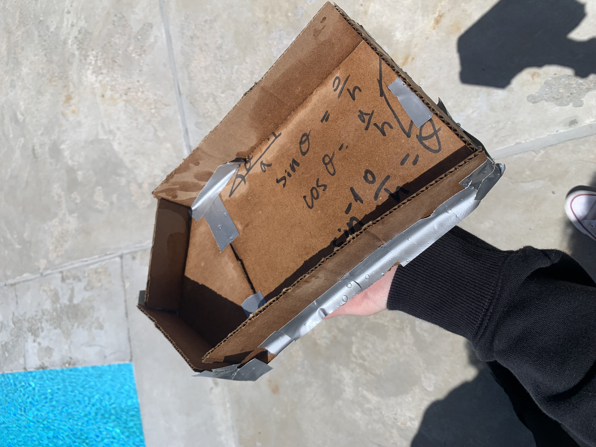
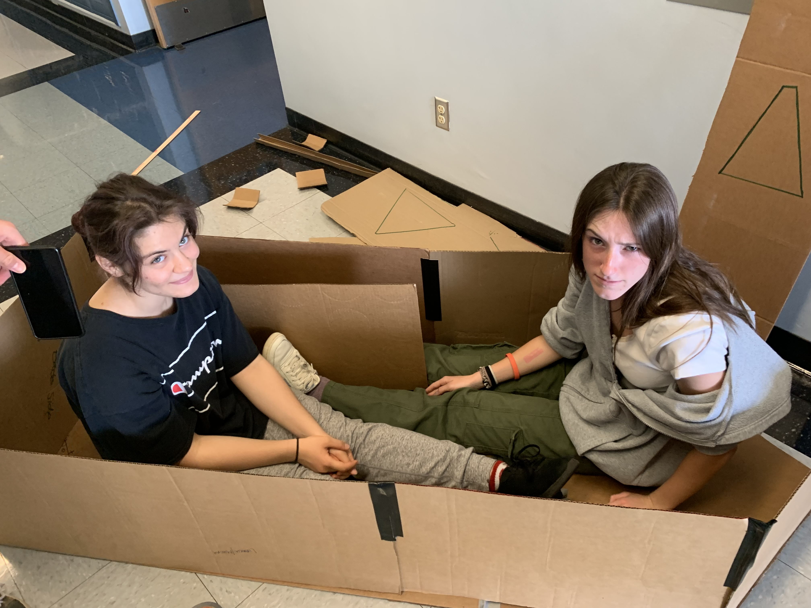
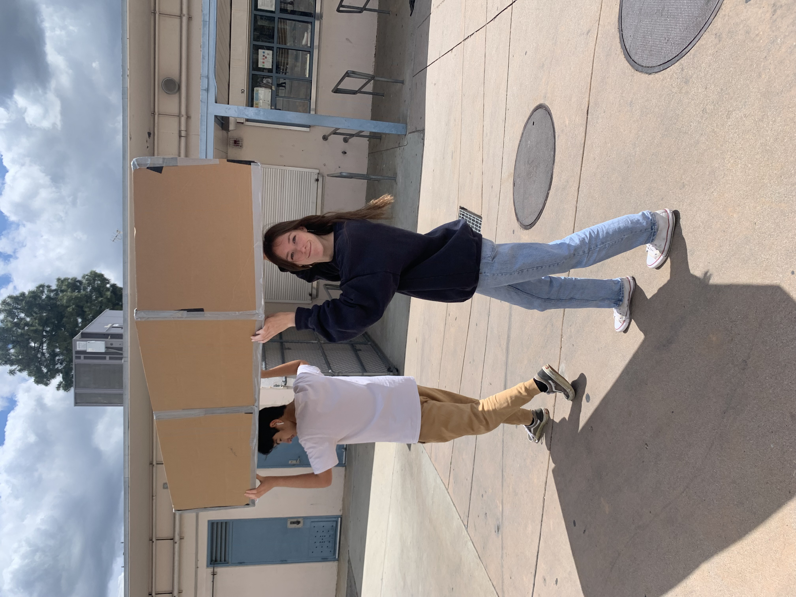
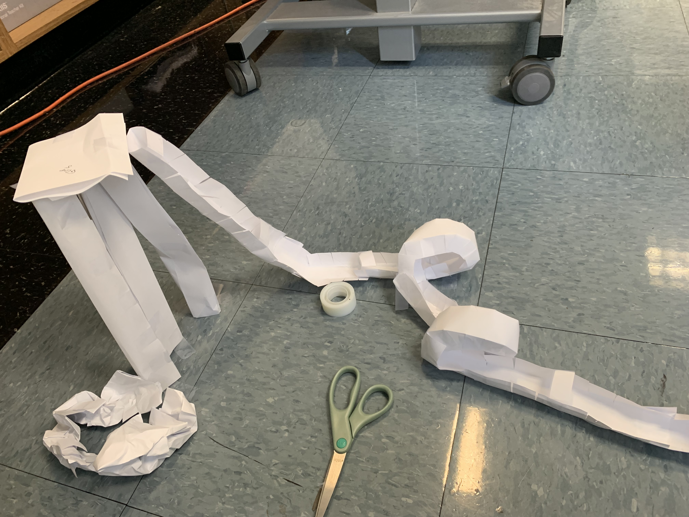
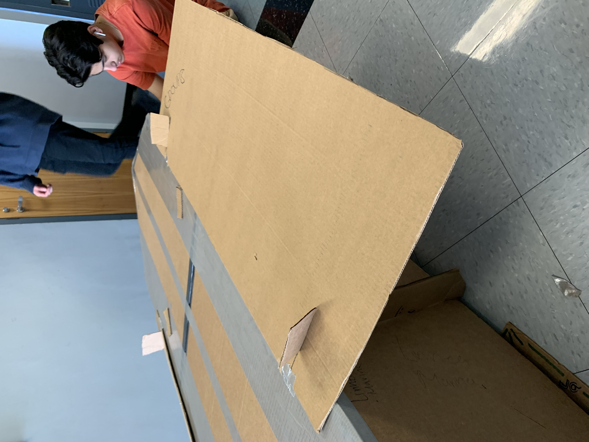
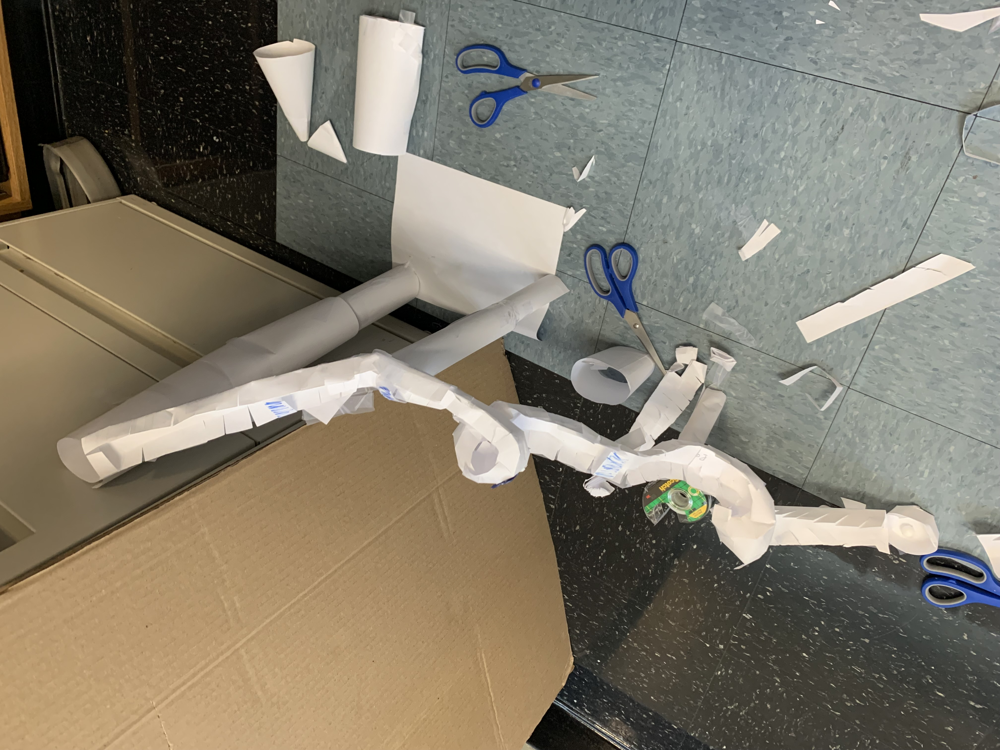
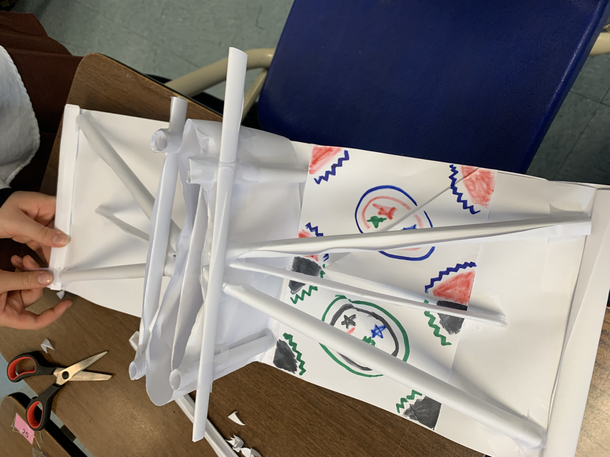

Week 1!
This week we learned about business engineering. These
engineers work with many groups of people within their jobs and sometimes
have to design and advertise new products for a certain group of people. Our
groups had to come up with a helpful invention and present to the class. My
groups invention was a new Math website called The Mathinator. It was mostly
to help students or anyone who uses math on the daily, and wants a reliable,
fast, and easy website to use for complicated problems a normal calculator
would not be able to solve. This was a very difficult project since my group
had so many designs to choose from in so little time.
Week 2!
This week we learned about chemical engineering. This is the
most interested I have been in a field of engineering so far. We were taught
a whole bunch of different jobs a chemical engineer could have from working
with cosmetic to nanotechnology. I am personally very interested in
nanotechnology. This is a very broad field. On Friday we worked with
oobleck. It was very satisfying watching the water mix in with the corn
starch and become a solid/liquid consistency.
Week 3
In week 3 we started on our projects. Me and my parnter
decided to work on the mousetrap car. We were required to write a project
proposal which is what we spent our week doing. Aong with that I was able to
do a lot of research to prepare for my design making on tinkercad. I have
been working on my 3D design on tinkercad for a couple days. My design
consists of pencils, CD's, a moustrap, and a string. These things together
will be used to make a successful mousetrap car.
Mousetrap Car!
My partner Marina and I have been working very hard on
our mousetrap car project This car has come a long way. We started off very
strong with this car and were able to make the body, attach the wheels, and
the string very quickly. It seemed as if all was perfect until we tested it.
The string would not unravel. We attempted many different ways of rolling it
on the dowel and made sure it was neat. However, this did not work. We
eventually realized that our wheels had too much glue on the sides of them,
which caused them to rub against the side of the car body. This would keep
the car from rolling smoothly. We had to take off the two back wheels and
scrape off as much glue as we could in order to reattach them. After it was
put together again, it ran perfectly. The string no longer got stuck on the
dowel and it is able to roll a little over one class length. We also added
decorations in our free time. We are very proud of how this car has turned
out.

Week 6
The past 6 weeks, Marina and I have been working very hard on
our mousetrap car. Marina had found some good inspiration off of the
internet for our car and the goals that we wanted to set for this project.
We began working and made the car body fairly quickly. Within a week of
building and starting the project we got to testing the car and its
capabilities. Everything looked good and we set up the car to see it roll
for the first time, when we set it on the ground and let go, nothing
happened. We gave it a little push but it was not doing much. This was quite
disappointing but we understood that we would have to find the problem and
fix it.
When we began looking for the problem, we first linked the issue to the kind of string we had been using. So, we switched to a different string. This did not make it any better. After that, we tried to change the length of the string and attempted to spin it onto the dowel very neatly, making sure it would not get caught. We had made little to no progress still. It would either not move at all, or move and stop halfway through. With some help and excessive testing, we found out the wheels were the issue. They were not spinning well or easily. We had excess glue on the side of the wheels, connecting the sides of the wheel to the body of the car. This made the wheel stop spinning. We got to work in order to fix this.
We decided to take the wheels off of the dowels and to get a longer dowel, and to use less glue. This would make sure the wheels would not be touching anything. After careful work, we managed to get the CD's off and began regluing them onto a new dowel. When we tested it we saw improvement. The car even started moving in a straighter line when we redid the wheels. In the end we had to add a little bit of glue by our string to keep the dowel in place even better which made our car even better. At this point the car became very consistent and was moving very well. It could move anywhere from 1-2 classes down the hallway every time we tested it. During the final competition against the other cars, we placed third due to the distance it was able to cover. We are very proud of how our car has developed and turned out.
Week 9!
Today on March 9th we did a challenge. We were given a variety
of random materials to build a boat with a propeller on it. My group
sruggled with ideas at first but then decided to use a balloon as the
propellor. We attached it to a cup on a boat and then blew it up. We had to
hold the end and then let go when testing it. Before testing it we realized
our boat was too wide which we had to change. When testing, our boat did not
go very far. It reached 4 feet down. Our balloon propelling system was not
as useful as we expected it to be. It barely pushed the boat. We would have
needed to use multiple balloons in order for it to have made a sinificant
difference. Due to lack of time, we also rushed the building process which
made our boat fall apart. We had a few mistakes on our boat which could have
been fixed with more building time.
Week 10!
This week we started a new project. This project is the egg drop challange.
We get a set of supplies that we can pick from and we can use a very limited amount. My groups design consists of
a box with a parachute. Inside the box, we will lay 4 slightly inflated balloons on the bottom and then
the egg will be taped to the top of the box in a bundle of cotton balls, paper, straws, etc.
Outside the box, we will connect a plastic bag to work as a parachute for extra support.
Week 11!
This week we began building our egg drop designs. Our design had the egg wrapped in paper in a bag, then placed in
a box with balloons in it. We did not get a lot of time to build this design. We did not come accross too many issues
and when we tested it, our egg survived the drop. The drop was 2 stories high but a success.
Week 12!
Week 12 we started a new project. This time we are going to have to build a boat out of cardboard and use just duct tape.
There are certain restrictions with this project since we only get a roll of duct tape per group. When our project is done,
we will put two people in our group in the boat and they will attempt to row across the pool at CV. Our group decided to make a boat that is 6.5 feet long
and 5 feet wide, this should be plenty of space for me and Marina to sit. We are also making two paddles to use to get our boat through the pool.
Week 13!
Week 13 in engineering we began building our cardboard boat. This process took a lot of measuring, cutting, and 4 pieces of cardboard.
My group decided to measure out all the different pieces we would need to build our boat. This included the bottm, side pieces, the front, and the back.
After we measured out all the pieces we cut them all out using a box cutter, which was a very tiring and time consuming task.
Getting the measurements to be exact and even was more difficult than expected and we are realizing now that everything has to fit together
almost perfectly, especially since we have a limited amount of duct tape.
Week 14!This week my group got to make and test a prototype. Our prototype was very quickly made because we did not know we had to make one at first. Marina began making our prototype and it was very very tiny. The brick to test it out did not even fit in the boat so we had to use rocks. I had also made a very minimal prototype which was slightly larger but not well made. There were plenty of gaps and when the brick was tested in this prototype, it sank immediately.
Week 15!This week my group continued cutting out our boat! We got all of the pieces cut out and measured to fit together perfectly. We did not get our own roll of duct tape yet which forced us to critique the pieces of our boat, which actually made it better. We did end up getting to use a small bit of duct tape which we used to put all the pieces together. Our boat is fully assembled but with quite a few gaps that we will fill when we get our own roll of tape.
Week 16!We got our rolls of tape this week! We were able to perfect our boat. We used the tape to keep the boats structure and to make it srtonger. We taped all of the corners, the bottom, and wherever cardboard meets together. When we were finished taping all the corners, we used the rest of the tape on the bottom of our boat. We are now thinking about making some attachments to the boat to keep it from flipping. These attachments will have to require no tape though.
Week 17!My group made some additions to our boat this week. We decided to add a sort of floating device to the sides of our boat. We used cuts in the cardboard to get the new attachment to stay. The attachments look like flat panels on the sides which make the boat wider and give it a smaller chance of flipping. On Friday we started building a paper rollercoaster. This is supposed to have 2 loops and the marble has to be able to go through it. I struggled with making the loops since the marble would not go through them.
 Week 18!This week we worked on our paper collercoasters. I had worked on them on Friday but Marina helped make it better when she came back on Wednesday and on Friday. It took many attempts to get the marble to roll through the loops efficiently but after much adjusting, it worked. Our rollercoaster did not look very grand at first which is why we got an 18/20. Then, some additions were made to make it longer and better. This bumped our grade to a 20/20 which we were very proud of.
Week 19!This was our last official work week. We worked on a challenge last class where we had to make a book stand that was sturdy with a cool design. Our group decided to use triangle shapes to make a sturdy shelf. Andrew also drew designs on our project to make it look nice. When it was tested, the book stood and was able to be smacked without falling over. Today we are working on our boat analysis and websites. It was a good year!
